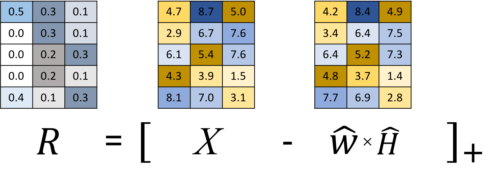

L-EnsNMF: Boosted Local Topic Discovery via
Ensemble of Nonnegative Matrix Factorization
Sangho Suh, Jaegul Choo, Joonseok Lee, Chandan K. Reddy


Table of Contents
- Motivation
- Proposed Solution
- Conclusion
Motivation
Existing topic modeling algorithms provide users
global topics that give general, redundant information
Idea
Local topic discovery to extract
more specific, informative topics?
Proposed Solution
(Intuition)


1) ITERATE -> Ensemble of NMF
2) BOOST & SUPPRESS -> Local weighting scheme
=> Localized Ensemble of Nonnegative Matrix Factorization
(L-EnsNMF)
Proposed Solution
(Details)


1) Residual Update -> Find unexplained parts (e.g. egyptian cat)
2) Anchor Sampling & Local weighting
-> Reveal unexplained parts and suppress explained parts
3) Ensemble -> Repeat this iteration
 Find unexplained topics using residual matrix, R
 Sample unexplained document(col) & keyword(row)
Sample unexplained document(col) & keyword(row)
 Reveal local topics & suppress global topics
Reveal local topics & suppress global topics
Repeat using gradient (i.e., residual values)

Proposed Solution
(Quantitative Experiment)
L-EnsNMF generates topics of high-quality regardless of
the number of topics and datasets
 Topics by L-EnsNMF become more and more diverse
Topics by L-EnsNMF become more and more diverse as the number of topics increases
L-EnsNMF runs fastest and is the most scalable
(cf. Fast Rank-2)
Proposed Solution
(Qualitative Experiment)

We generated 100 topics (10 keywords each) but only L-EnsNMF extracted local, specific keywords, e.g., ‘hurrican’, ‘sandi’, ‘ireland.’

A search for related web documents with the query ‘hurricane sandy ireland’ led to the discovery of the local news that the Ireland football team visited New York City in June 2013 to boost a community hit by Hurricane Sandy in 2012
Conclusion
- L-EnsNMF discovers local, focused topics of interest to users
- Compared to existing topic modeling algorithms, it generates topics of higher quality, higher document coverage at faster speed
Muchas Gracias
Questions?
E-mail: sh31659@gmail.com
Code: https://sanghosuh.github.io/lens_nmf-matlab